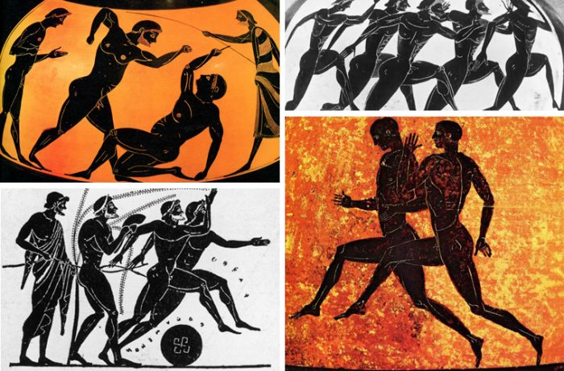

História dos Jogos Olímpicos
A criação dos jogos olímpicos ocorreu na Grécia Antiga cerca de três mil anos atrás (776 ac - 393 ac). Os jogos eram realizados a cada quatro anos no Monte Olimpo, um lugar sagrado na cidade de Olímpia, Grécia.
A princípio, os jogos foram criados como forma de trégua entre as cidades gregas, que guerreavam muito entre si. Existe também uma história mitológica em explicação do surgimento das olimpíadas, dizendo que seria uma homenagem a Zeus (o rei dos Deuses), após derrotar seu pai, Cronos. Não só isso, como também na cultura grega eles tinham uma relação forte com os esportes, tinham um ideal do corpo perfeito (forte, musculoso) e gostavam de competir.
As oito modalidades da época: boxe, corrida de bigas, salto em distância, dardo disco, pancrácio (tipo de arte marcial), corrida e luta livre. Estrangeiros e escravos eram proibidos de participar. Mulheres eram proibidas de participar e de assistir. O prêmio ao vencedor era coroa de oliveira representando a supremacia moral e espiritual dos jogos. Durante o Império Romano, os Jogos Olímpicos foram proibidos. Em 386 a.c., o imperador romano Teodósio proibiu a prática dos jogos e foi esse acontecimento que marcou o fim dos Jogos Olímpicos Antigos.
Jogos Olímpicos Modernos
A primeira edição dos jogos modernos foi realizada em 1896 na cidade de Atenas, na Grécia. Com a participação de 14 países e 241 atletas homens, as mulheres ainda eram proibidas de participar. Com oito modalidades: atletismo, ciclismo, esgrima, ginástica, halterofilismo, luta, natação e tênis. As mulheres participaram dos jogos pela primeira vez em 1900, e a adição de Londres 2012 foi o ano em que todos os países tinham pelo menos uma atleta mulher como representante. O prêmio: medalhas de prata, cobre e ramos de louro. Apenas em 1904 que passaram a premiar com medalhas de ouro. Desde então as Olimpíadas só não foram realizadas em 1916, devido a Primeira Guerra Mundial e em 1940 e 1944, devido a Segunda Guerra Mundial.
As 44 modalidades de acordo com a última olimpíada realizada, Paris 2024: atletismo, badminton, basquete, basquete 3x3, boxe, breaking, canoagem velocidade, canoagem slalom, ciclismo bmx freestyle,ciclismo bmx racing, ciclismo de estrada, ciclismo de pista, ciclismo de mountain bike, escalada, esgrima, futebol, ginástica artística, ginástica trampolim, ginástica rítmica, golfe, handebol, hipismo, hóquei sobre a grama, judô, Levantamento de peso, luta, maratona aquática, nado artístico, natação, pentatlo moderno, polo aquático, remo, rugby sevens, saltos ornamentais, skate, surfe, taekwondo, tênis, tênis de mesa, tiro com arco, tiro esportivo, triatlo, vela, vôlei e vôlei de praia.
Segundo o Estatuto Olímpico, hoje, a descrição é de que jogos foram criados com o objetivo de promover a paz e união entre os países através da prática de esportes.
